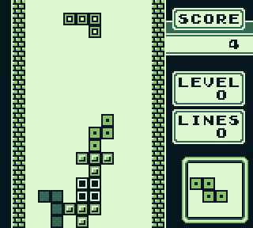
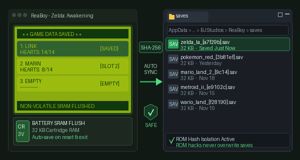
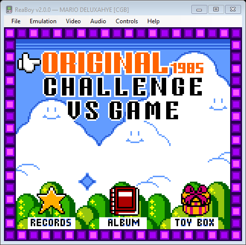

Locked Integer Scaling
Fixed 1×, 2×, 3×, and 4× window sizes locked to 160×144, auto-capped to your monitor, plus instant F11 fullscreen and authentic Olive Green or Grayscale palettes.
ReaBoy unites the iconic monochrome Game Boy (DMG-01) and Game Boy Color (CGB) into one cycle-accurate emulator for Windows and Android. Engineered from byte $0000 with dot-accurate Pixel FIFO scanline timing, 8.388 MHz double-speed SM83 execution, 4-channel sound, and zero installation or external dependencies.
Zero installation wizards, zero registry clutter, and zero external dependencies. Choose your preferred setup method:
Download the complete standalone package, unzip anywhere on your PC (e.g. C:\Games\ReaBoy), and launch ReaBoy.exe directly. No admin rights or installer wizard needed.
Run this single command in PowerShell or Windows Terminal to automatically download, verify checksums, extract, and start ReaBoy instantly:
irm https://raw.githubusercontent.com/ScientificBrad/ReaBoy/main/install.ps1 | iex%LOCALAPPDATA%\Programs\ReaBoy and adds optional Start Menu & Desktop shortcuts.
Take bit-exact Game Boy and Game Boy Color emulation on the go. Features responsive on-screen touch controls, haptic vibration, OpenGL hardware-accelerated scaling, embedded Bootix firmware, and standard battery saves.
ReaBoy-2.0-Android.apk on your device and tap Install (allow Install unknown apps if prompted). Zero ads, zero telemetry, and zero tracking.
Every commercial original Game Boy release (1,592 titles) and Game Boy Color retail library (969 titles, 2,561 total games) tested and verified across ROM-Only, MBC1, MBC2, MBC3+RTC, MBC5, and MBC7 mappers. Cycle-accurate SM83 timing, dot-accurate Pixel FIFO rendering, and 184 automated tests (including 63 passing hardware test ROMs). Search the complete unified database and inspect verified execution telemetry.

GAME BOY & COLOR PHILOSOPHY
No bloated frontends, no hunting for obscure BIOS files, no stretched blurry pixels. Every decision in ReaBoy respects both the original 1989 Game Boy (DMG-01) and 1998 Game Boy Color (CGB-001) hardware.
Fixed 1×, 2×, 3×, and 4× window sizes locked to 160×144, auto-capped to your monitor, plus instant F11 fullscreen and authentic Olive Green or Grayscale palettes.

Drop any .gb or .gbc ROM onto the window to switch cartridges instantly. Remove Cartridge safely saves battery RAM and returns to the boot logo.

Battery-backed RAM (MBC1, MBC2, MBC3+RTC, MBC5, MBC7) saves automatically on game switch, reset, cartridge removal, and exit — keyed by ROM content hash in %APPDATA%\BJStudios\ReaBoy\saves.
Drop any .gbc cartridge onto the window and ReaBoy automatically switches into authentic Game Boy Color mode — unlocking all 32,768 RGB555 colours across 64 hardware palettes, 8.388 MHz double-speed execution, 16 KiB dual-bank VRAM, and full MBC5 / MBC7 support right alongside your classic monochrome .gb games.

DEFAULT KEYBOARD CONTROLS
COMPLETE USER MANUAL & CLI
Engineered for both casual play and bit-exact research. The technical guide covers every hardware register, headless benchmarking, and cartridge mapper detail:
--headless --frames 600 CI runner
.sav keyed by ROM content
Real animated gameplay captured directly from ReaBoy's cycle-accurate SM83 CPU and Pixel FIFO PPU core—mixing 6 flagship Game Boy Color showpieces and 6 original Game Boy classics side by side.
Full-colour pocket edition of the 1985 classic running live through World 1-1 with smooth camera panning, vibrant RGB555 skies, and Challenge Mode. (1,024 KB · MBC5+RAM+BATT).

Arguably the greatest adventure ever made for the original Game Boy. Huge Koholint Island overworld, complex dungeons, and smooth 4-way scrolling. (1,024 KB · MBC1+RAM+BATT).
The crown jewel of Game Boy Color RPGs featuring Suicune's animated title screen, real-time clock events, and double-speed CPU execution. (2,048 KB · MBC3+RTC+RAM+BATT).

Rich 16×16 sprite graphics, responsive physics, and Wario's debut. Verifies mid-frame scanline PPU timing and fluid integer scaling. (512 KB · MBC1+RAM+BATT).
The vibrant colour re-release featuring the stormy sea opening, exclusive Color Dungeon, and rich 15-bit RGB555 tile palettes. (1,024 KB · MBC1+RAM+BATT).

The monster-catching phenomenon that defined handheld gaming. ReaBoy's upgraded MBC3 mapper faithfully executes battery-backed trainer saves. (1,024 KB · MBC3+RAM+BATT).
Capcom & Flagship masterpiece featuring animated sunset horseback riding, dual-bank VRAM tiles, and vibrant multi-palette rendering. (1,024 KB · MBC5+RAM+BATT).

The quintessential pack-in masterpiece. Requires cycle-strict APU frequency accuracy for the iconic Korobeiniki theme and drop-timing precision. (32 KB · ROM-Only).
Puzzle-platforming inside a magical music box with vibrant parallax skies, biplane flights, and day/night palette transitions. (2,048 KB · MBC5+RAM+BATT).

Atmospheric, cavernous SR388 exploration with massive Samus Aran sprites, morph ball physics, and demanding VRAM tile-update routines. (256 KB · MBC1).
Konami's critically acclaimed stealth-action classic featuring high-contrast animated intros, crisp codec portraits, and double-speed CGB rendering. (2,048 KB · MBC5+RAM+BATT).

Animal companions Rick, Kine, and Coo push DMG hardware with parallax background tricks and dense sprite composition across Rainbow Islands. (1,024 KB · MBC1+RAM+BATT).